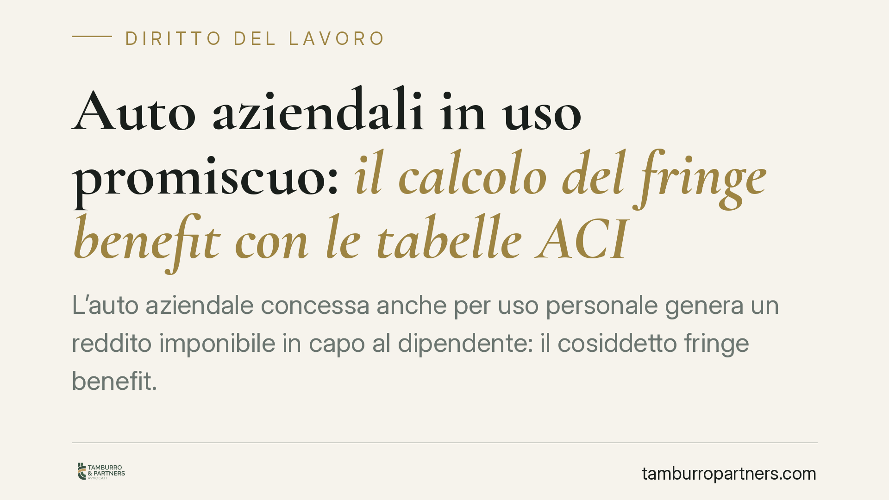

Auto aziendali in uso promiscuo: il calcolo del fringe benefit con le tabelle ACI
L'auto aziendale concessa anche per uso personale genera un reddito imponibile in capo al dipendente: il cosiddetto fringe benefit. Con la Legge di Bilancio 2025 il criterio di calcolo cambia e premia le vetture a basse emissioni. Analizziamo la nuova disciplina, il ruolo delle tabelle ACI e cosa devono verificare datori di lavoro e lavoratori.

Il fatto
Quando l'azienda assegna un veicolo al dipendente per un uso non solo lavorativo ma anche privato, quella disponibilità ha un valore economico. Il fisco lo considera parte della retribuzione in natura e lo tassa. È il fringe benefit (letteralmente "beneficio accessorio"): non è denaro, ma un vantaggio quantificabile che concorre a formare il reddito di lavoro dipendente.
La Legge di Bilancio 2025 ha riscritto le regole di calcolo per i veicoli immatricolati e concessi dal 1° gennaio 2025. Il criterio non è più legato alle emissioni di CO2, ma alla tipologia di alimentazione. Con l'aggiornamento delle tabelle ACI valide per il 2026, è il momento di fare chiarezza.
Inquadramento normativo
La fonte è l'art. 51, comma 4, lettera a) del TUIR (Testo Unico delle Imposte sui Redditi). La norma fissa il valore imponibile in via forfetaria: si calcola su una percorrenza convenzionale di 15.000 km annui, applicando il costo chilometrico ricavato dalle tabelle elaborate ogni anno dall'ACI e pubblicate in Gazzetta Ufficiale. A questo importo si sottrae quanto eventualmente trattenuto al dipendente per l'uso del mezzo.
La novità è nelle percentuali. L'art. 1, comma 48, della L. n. 207/2024 (Legge di Bilancio 2025) ha sostituito la vecchia scala legata all'inquinamento con quattro fasce fondate sull'alimentazione:
- 10% per i veicoli elettrici a batteria;
- 20% per i veicoli ibridi plug-in;
- 50% per tutti gli altri veicoli (benzina, diesel, ibridi non plug-in).
Il calcolo è dunque: costo chilometrico ACI × 15.000 km × percentuale prevista. Il risultato è il valore annuo imponibile.
Attenzione al perimetro temporale. Il nuovo regime si applica ai contratti stipulati dal 1° gennaio 2025 per veicoli di nuova immatricolazione. Per i mezzi assegnati in date precedenti restano rilevanti le regole previgenti, con un quadro transitorio che richiede verifica caso per caso.
Implicazioni pratiche
Per il datore di lavoro la scelta del veicolo diventa una decisione con impatto fiscale diretto. Assegnare un'auto elettrica anziché una a benzina può ridurre di cinque volte l'imponibile in busta paga, con effetti su ritenute e contributi. La flotta aziendale va ripensata anche in chiave di costo complessivo.
Per il dipendente il fringe benefit incide sul reddito tassato e sull'aliquota effettiva. Un valore più basso significa meno imposte e più netto. Ma significa anche verificare che l'importo indicato in busta paga corrisponda al modello di vettura e all'alimentazione reali.
Un punto spesso trascurato: la percentuale forfetaria si applica a prescindere dall'uso concreto. Anche chi usa poco l'auto per fini privati sconta comunque il valore convenzionale. Non è ammessa prova contraria basata sui chilometri effettivamente percorsi.
È inoltre essenziale distinguere l'uso promiscuo (privato e lavorativo) dall'uso esclusivamente aziendale, che non genera fringe benefit, e dall'uso solo personale, tassato in modo diverso. La qualificazione va documentata nel contratto o in una policy aziendale scritta.
Cosa fare in concreto
- Verificate la data di immatricolazione e di assegnazione del veicolo: da questa dipende se si applica la nuova disciplina o quella previgente.
- Consultate le tabelle ACI aggiornate al 2026 per lo specifico modello e allestimento: il costo chilometrico varia in modo sensibile tra le versioni.
- Formalizzate per iscritto la natura dell'assegnazione (uso promiscuo, esclusivo o personale) nel contratto o in una policy dedicata.
- Controllate la busta paga: l'importo del fringe benefit deve riflettere alimentazione e modello corretti, al netto di eventuali trattenute a carico del dipendente.
- Valutate la composizione della flotta in ottica fiscale prima di nuovi acquisti o rinnovi contrattuali.
Conclusione
La riforma sposta l'incentivo verso la mobilità a basse emissioni, con un risparmio fiscale tangibile per elettriche e ibride plug-in. La corretta applicazione richiede però attenzione alle date, alle tabelle e alla documentazione contrattuale. Consigliamo di rivedere accordi e policy aziendali prima del prossimo ciclo di assegnazioni.
---
*Contributo informativo a cura di Tamburro & Partners - Avv. Giuseppe Tamburro. Non costituisce parere legale.*
Ogni storia di lavoro ha i suoi tempi.
Se gestisci HR e vuoi un confronto su contenzioso, ispezioni o licenziamenti, scrivi allo studio. Ti rispondiamo entro un giorno lavorativo.